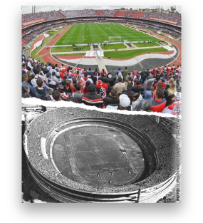
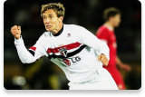
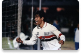
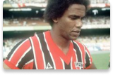
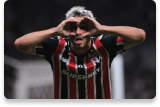
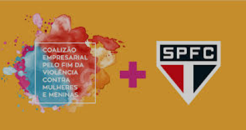

O tricolor paulista surgiu através da fusão de dois antigos clubes: o Paulistano, grande campeão no início do século XX e a Associação Atlética das Palmeiras, que se uniram em 1930 dando origem ao Clube Athlético São Paulo ou São Paulo da Floresta, como muitos o chamavam. No seu segundo ano de existência, o clube se consagrou campeão paulista. O São Paulo já era um gigante do futebol local, só que nem mesmo o clube imaginava onde iria chegar.
Em 1935, o clube teve uma nova refundação. Isso ocorreu devido a uma crise política dentro da instituição. Alguns dirigentes não estavam contentes com a situação do futebol no país, tomando a atitude de sair do futebol e se unir com o Clube Regatas Tietê. Só que o futebol no tricolor resistiu, e em 4 de junho de 1935 alguns sócios refundaram o que foi chamado de Clube Atlético São Paulo, tornando-se posteriormente o grande São Paulo Futebol Clube. Surge então um gigante no futebol, com a tradição de colecionar títulos. É, essa camisa pesa, amigos, e como diz o próprio hino: "Dentre os grandes és o primeiro!"
O primeiro passo foi encontrar o local, mas a área era no "meio do nada". Em 1952, o São Paulo conseguiu o aval de empréstimo com a Caixa Econômica Estadual para a construção do espaço. O segundo passo foi a arrecadação de fundos para seguir a obra, o que seria a primeira ação de sócio-torcedores dentro de um clube. A diretoria vendeu cadeiras cativas para os torcedores. A ideia era vender 20 mil cadeiras com validade de 20 anos. Contudo, boa parte da torcida não acreditava em uma obra "no meio do mato". A ideia ainda se reforçou com as campanhas de times rivais contra o novo estádio. Dessa forma, o SPFC liberou apenas 12 mil cadeiras de forma vitalícia ao torcedor. No dia 10 de março de 1953 foi apresentado a maquete do sonho tricolor, o tão desejado Morumbi, a inauguração do estádio foi no dia 2 de outubro de 1960. O time convidado para as honras foi o Sporting, de Lisboa. O 1º gol do estádio foi feito por Arnaldo Poffo Garcia, o Peixinho, aos 12' do 1º tempo.

O time tricolor possui uma enorme galeria de titulos, sendo uma das maiores e mais premiadas entre todos os times brasileiros. A galeria é composta por : 22 Campeonatos Paulistas: 1931, 1943, 1945, 1946, 1948, 1949, 1953, 1957, 1970, 1971, 1975, 1980, 1991, 1992, 1998, 2000, 2002, 2005 e 2021 1 Torneio Rio-São Paulo: 2001 1 Copa do Brasil: 2023 6 Campeonatos Brasileiros: 1977, 1986, 1991, 2006, 2007 e 2008 1 Supercopa da Libertadores: 1993 2 Recopas Sulamericanas: 1993 e 1994 1 Copa Conmebol: 1994 3 Mundiais de Clubes: 1992, 1993 e 2005 3 Copas Libertadores: 1992, 1993 e 2005 1 Copa Sul-Americana: 2012 1 Supercopa do Brasil: 2024

Telê chegou ao São Paulo em 1990. O técnico foi visto pelos são paulinos como o 'Fio de Esperança'. Mestre Telê, como era conhecido, conquistou dez títulos oficiais, além de outros torneios - tanto nacionais quanto internacionais.
Durante sua passagem pelo SP, Lugano conquistou diversos títulos, incluindo o Brasileiro de 2006, Libertadores de 2005 e o Mundial de 2005. Ele também foi eleito o melhor zagueiro da América do Sul em 2005 e 2006.
O “Terror do Morumbi”, como foi eleito pela torcida, brilhou carimbando duas taça Libertadores (1992-1993), com direito a gol na final, e uma taça do tão sonhado mundial de clubes.
Não há como falar em gols, sem citar Serginho Chulapa, o maior goleador da história do clube. Com a marca de 242 gols em 399 jogos, Chulapa é lembrado com carinho pela torcida que o acompanhou durante seus 9 anos no Soberano.

O “Fabuloso”, como ficou conhecido entre os fãs de sua carreira, acumula 212 gols e a taça da Copa Rio São Paulo, de 2001, além da Sulamericana de 2012 e será eternamente, um dos maiores ídolos do São Paulo.
O atacante argentino vem se tornando cada vez mais essencial ao clube, participando ativamente na conquista de dois titulos inéditos como a Copa do Brasil de 2023 e Supercopa de 2024.

Rogério Ceni é o maior goleiro-artilheiro do mundo e lembrado como um dos maiores goleiros da história do futebol mundial, no auge (2005-2008) de sua carreira como jogador foi tomado como um dos cinco melhores goleiros então em atividade no mundo. Além de suas habilidades defensivas e como pegador de pênaltis (é o goleiro que mais defendeu pênaltis na história do futebol) tornou-se reconhecido por suas capacidades ofensivas (com 131 gols marcados, é o goleiro que mais fez gols na história de futebol, e um dos jogadores que mais fez gols de falta, igualando o número de Diego Maradona) e pela precisão de sua reposição de bola em chutes longos, contribuindo assim para armar o ataque.
Revelado em 1990 pelo Sinop, do Mato Grosso, foi contratado no mesmo ano pelo São Paulo, equipe da qual foi titular de 1997 até 2015 e é considerado o maior e melhor jogador da história do clube, por ter conquistado praticamente todos os títulos possíveis, sendo em muitos deles decisivo. Dentre suas principais características está a lealdade ao clube, que serviu por 25 anos ininterruptos, sendo atualmente o jogador que mais vestiu a camisa de

um mesmo clube na história do futebol mundial, tendo superado Pelé, que vestiu a camisa do Santos em 1116 jogos, além do norte-irlandês Noel Bailie, que mantém o recorde europeu com 1014 jogos pelo Linfield United, e Ryan Giggs, que disputou 963 partidas pelo Manchister United.

Rogério possui inúmeros outros recordes expressivos, tal como o jogador que mais vezes foi capitão de uma mesma equipe (982 jogos), e também o de jogador que mais venceu por um mesmo clube na história (com mais de 601 vitórias, batendo o recorde de Ryan Giggs, que era de 589 vitórias). Ficou conhecido pela torcida são-paulina como Mito(com variações como MITO ou até mesmo M1T000, em referência aos mais de mil jogos pelo clube), um apelido criado pelo jornalista Vitor Berner em meados do ano 2000, com reconhecimento pelo espírito profissional, raçudo e comprometido com o clube, apelido o qual, depois das grandes atuações e dos vários títulos importantes entre 2005 e 2008, se popularizou. Em 2021, entrou numa lista seleta de pessoas que conquistaram o Campeonato Brasileiro como jogador e como técnico de futebol, sendo o 8° a conseguir tal feito.
O São Paulo ingressou na Coalizão Empresarial Pelo Fim das Violências Contra Mulheres e Meninas, iniciativa privada e colaborativa que une esforços e recursos corporativos para gerar impacto social por meio da conscientização e mobilização para o fim da violência contra mulheres e meninas. O time paulista, que já atua internamente com ações de conscientização e informação, além de inclusão de mulheres, passará a integrar o tema à agenda de treinamentos de liderança, implementação de canais e projetos de apoio às suas profissionais para ambientes de trabalho seguros.
Minha história com o São Paulo Futebol clube se inicia a muitos anos atrás, quando eu ainda era uma criança que não entendia quase nada sobre esportes. Meu pai, um grande São Paulino sempre me incentivou a torcer para o time que eu quisesse mas eu sempre o via torcendo para o São Paulo e isso me despertou curiosidade, até que um dia, enquanto eu assistia TV um jogo do São Paulo começou, este jogo era a final da Sul americana, um titulo inédito para o São Paulo e eu tive a felicidade de ver o tricolor levantando a taça e sendo campeão de mais um titulo. Um ano depois, fomos visitar o Morumbi e lá me apaixonei de vez pelo time, indo assistir uma partida de São Paulo x Corinthians dias depois com minha família.
Por alguns anos me afastei do futebol, não acompanhando e nem vendo muitas coisas sobre, até que em 2023 voltei a acompanhar mais fielmente os jogos e tive a felicidade de ver meu tricolor sendo campeão da Copa do Brasil e da Supercopa, dois titulos inéditos que terminaram de preencher a enorme galeria do São Paulo, se tornando o único time a ganhar todos os titulos
Abaixo possuimos um quiz baseado na história do tricolor paulista para caso você tenha interesse em medir seus conhecimentos. Para a resposta do quiz é necessário realizar o login em nosso site para que você possa ser redirecionado para nossa dashboard. Ainda não possui cadastro? Clique aqui e o realize!
Você realmente é tricolor? Inicie este quiz para descobrir